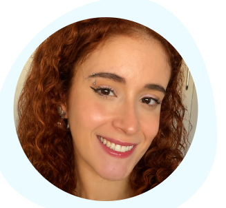

Cuidado humanizado e individualizado.
Priorizar-se Espaço de Psicologia: Cuidando de você em cada etapa da sua jornada.

Quem somos?
A Priorizar-se Psicologia nasceu de um propósito profundo em meu coração: um chamado para cuidar de pessoas e da saúde mental. Um projeto que reconheço como vindo do coração de Deus e que ganhou forma durante minha pós-graduação em Avaliação Psicológica.
Sonhei com um espaço em que as pessoas pudessem se priorizar, olhar para si com mais cuidado e responsabilidade, não apenas quando o sofrimento já está intenso, mas também na prevenção e na construção de uma vida emocional mais saudável ao longo do tempo.
A Priorizar-se foi pensada como um lugar de evolução: um ambiente acolhedor, ético e profissional, onde o autoconhecimento, a avaliação psicológica e o acompanhamento terapêutico contribuem para que cada pessoa desenvolva recursos internos, fortaleça sua história e caminhe com mais equilíbrio.
Meu compromisso, como psicóloga Silviane Rocha (CRP 13/574), é oferecer um espaço de escuta qualificada, respeito e sigilo, unindo conhecimento técnico à sensibilidade no cuidado com cada pessoa que chega até aqui.
Nossos Serviços
Formatos de atendimento pensados para a sua realidade
Apoio Online
Sessões virtuais que garantem cuidado e conforto onde você estiver.
Terapia Presencial
Atendimento personalizado para fortalecer sua saúde mental e bem-estar.
Nossos Especialistas
Arraste para o lado para ver nossa equipe completa multidisciplinar
Silviane Rocha
Psicóloga Clínica
CRP 13/574
• Avaliação Psicológica
• Psicoterapia Existencial
• Atendimento Adulto
Marcos Freitas
Psicólogo
CRP 09/19463
• Terapia Cognitivo-Comportamental
• Atendimento de Casais
• Ansiedade e Depressão
Vanda Camelo
Psicóloga
CRP 09/001404
• Psicoterapia de Orientação Psicanalítica
• Crises de Identidade
• Desenvolvimento Pessoal
Márcia Cássia
Psicóloga
CRP 09/3638
• Orientação Vocacional
• Psicologia Humanista
• Conflitos Familiares
Jordana S. Marques
Psicóloga
CRP 09/19293
• Psicoterapia para Adolescentes e Adultos
• Luto e Perdas
• Autoestima
Patric Vasconcelos
Neuropsicólogo
CRP 09/015388
• Avaliação Neuropsicológica Infantil/Adulto
• Diagnóstico de TDAH e Autismo
• Reabilitação Cognitiva

Isadora Costa
Psicóloga
CRP 09/17414
• Terapia Infantil e Hebiatria
• Orientação de Pais
• Desenvolvimento Emocional
Carla Mariane
Psicóloga
CRP 09/15302
• Psicoterapia Fenomenológica
• Manejo de Estresse Profissional
• Transições de Vida
Lusdalva Lemes
Psicóloga
CRP 09/21096
• Psicologia da Saúde
• Suporte a Pacientes Crônicos
• Inteligência Emocional
Goreth Marques
Neuropsicopedagoga / Pedagoga
CBO 2394-40/45
• Avaliação e Estimulação do Neurodesenvolvimento
• Intervenção em TEA, TDAH e Dislexia
• Atendimento de Crianças e Adolescentes
Marilda Amâncio
Psicóloga Clínica
CRP 09/011745
• Acolhimento e Fortalecimento Emocional
• Ansiedade, Autoestima e Relacionamentos
• Manejo de Dependência Emocional e Luto
Tammy Avelino
Psicóloga / Neuropsicóloga
CRP 21/01800 | 03/IS00439
• Avaliação Neuropsicológica Completa
• Investigação de TEA, TDAH e Cognição
• Psicoterapia Infantil a Idosos
Isadora Costa
Psicóloga / Especialista TCC
CRP 09/17414
• Tratamento de Ansiedade, Depressão e Burnout
• Dependência Química e de Nicotina
• Atendimento a Adolescentes e Adultos
Nosso Espaço
Ambiente acolhedor e estruturado para o seu bem-estar